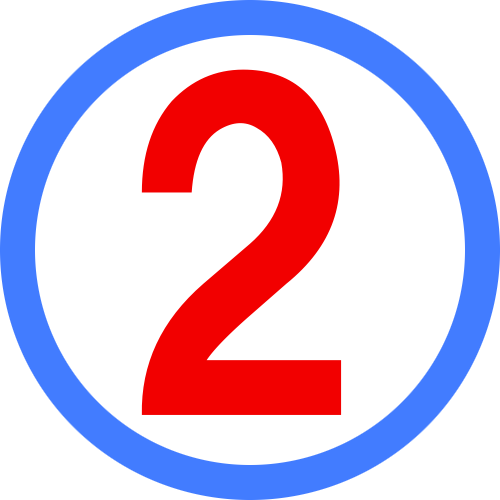

最初に入ったプレイヤーは、 "Player1" として参加し、 次に入ったプレイヤーは "Player2" として参加できます。
ゲームが始まったら、手元のmicro:bitを振ってください。 きちんと振れられていれば、ホストのモータのついたmicro:bitが動きだします。
そして、従来の紙相撲と同じように、相手の力士を落とす、または倒すと勝ちとなります。
micro:bitさえ持っていれば、子どもからご老人まで、男女関係無く遊ぶことができます。